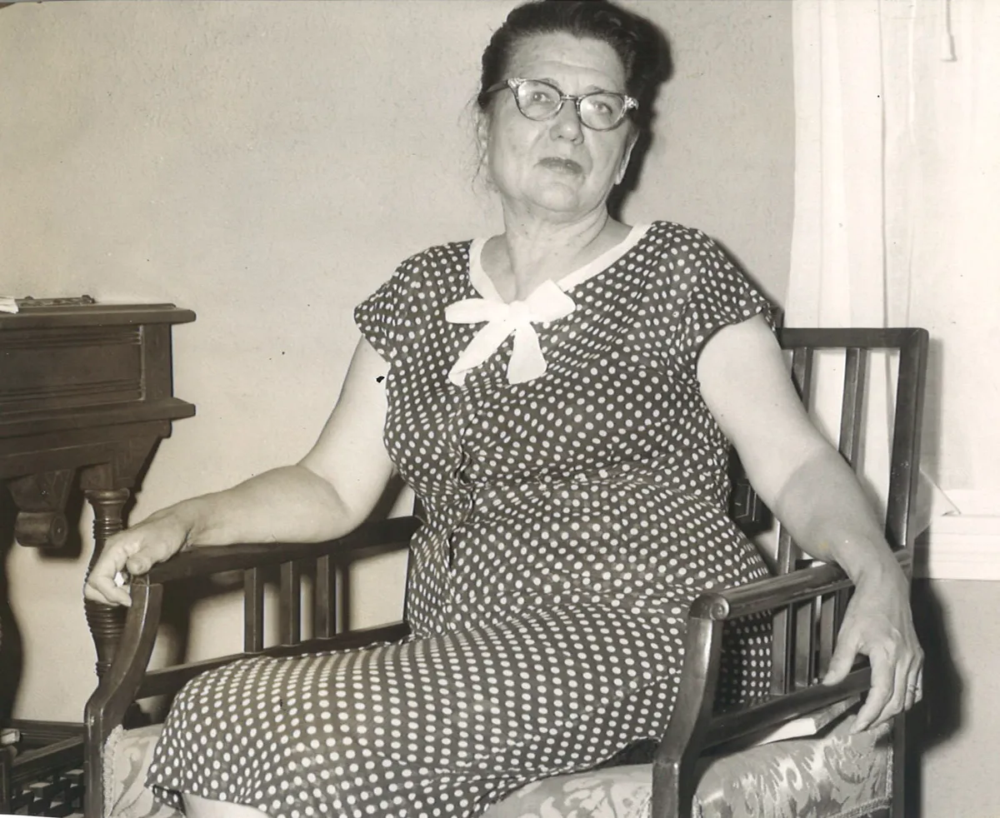
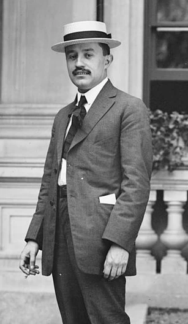
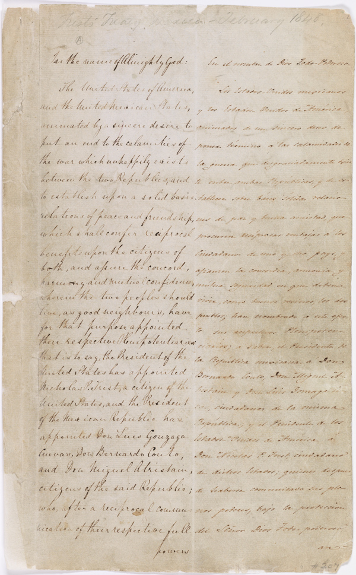
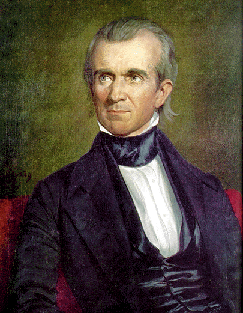

Borderlands Literatures
Cultural Gallery
Explore the texts and sources explored throughout the course and dissected on this research site.

Borderlands/La Frontera
Gloria Anzaldúa
Gloria Anzaldúa's herida abierta defines the border as a psychological gash where worlds grate together.
Source
Borderlands/La Frontera
Gloria Anzaldúa
A foundational text in Chicana feminist theory and borderlands studies.


Caballero
Jovita González & Eve Raleigh
A historical-romance collaboration that became a pillar in Mexican-American literature. Initially hidden when written due to political tensions, it was finally published in 1996.
Source
Caballero
Jovita González & Eve Raleigh
Texas A&M University Press, 1996. Written in the 1930s–40s, the manuscript remained unpublished for decades before its recovery by José Limón.

Solito
Javier Zamora
A harrowing memoir following Zamora's journey across the border as a young child. Published in 2022, it won the American Book Award in 2023.
Source
Solito
Javier Zamora
Review written by Juan R. Palomo. Winner of the 2023 American Book Award and the Lukas Book Prize. Zamora crossed the border alone at age nine in 1999.


La Raza Cósmica
José Vasconcelos
Encapsulates Vasconcelos' vision of a new cosmic race that blends existing ones together as a solution to racial hierarchy.
Source
La Raza Cósmica
José Vasconcelos
Originally published 1925. A philosophical essay proposing that Latin America would give rise to a universal "fifth race" transcending racial divisions.

With His Pistol in His Hand
Américo Paredes
A classic in Mexican-American folklore following outlaw Gregorio Cortez as he avenges his brother's death against the Texas Rangers.
Source
With His Pistol in His Hand
Américo Paredes
University of Texas Press, 1958. Revolutionized Borderlands studies by centering the corrido tradition and the Gregorio Cortez legend as acts of cultural resistance.


Treaty of Guadalupe Hidalgo
1848
The document that ended the Mexican-American War on a supposedly fair compromise — one that was systematically broken in the decades that followed.
Source
Treaty of Guadalupe Hidalgo
1848
Signed February 2, 1848. Transferred roughly half of Mexico's territory to the US and promised property rights to Mexican residents — promises rarely honored.

Operation Gatekeeper Order
Clinton Administration, 1994
The document formalizing the initiative to stop illegal immigration in San Diego through intense border enforcement — one that redirected migrants into the deadly desert instead.
Source
Operation Gatekeeper Order
Clinton Administration, 1994
Launched October 1, 1994. By militarizing the San Diego corridor, it funneled migrants into Arizona and New Mexico deserts, where thousands died in the years that followed.